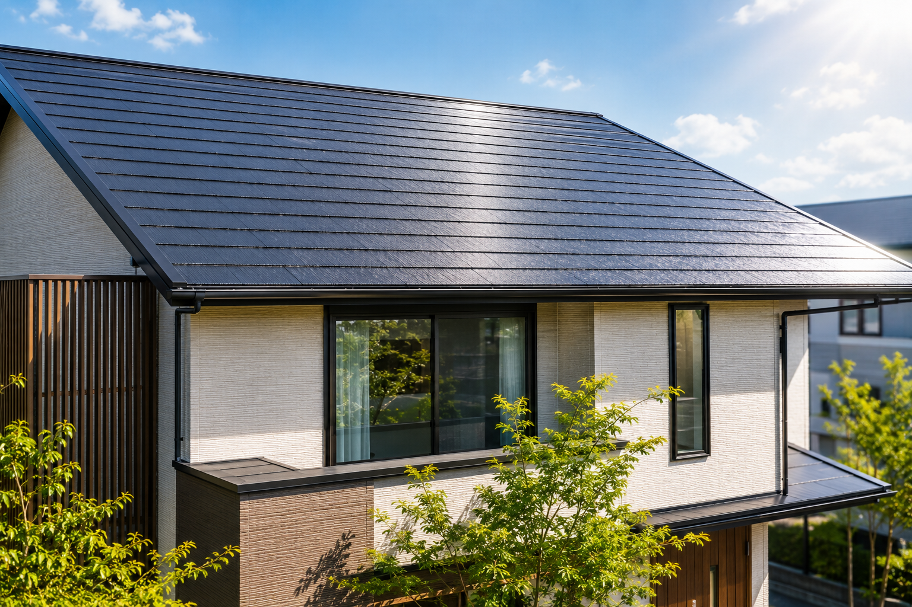

屋根は、家族が寝静まっているときも、照りつける夏の太陽や大雪から、ずっと家を守り続けている一番の功労者です。しかし、もっとも過酷な場所にありながら、地上からでは状態が見えにくいのが最大の難点です。
塗装の膜が活きているうちは問題ありませんが、5年以上経過すると徐々に塗装膜が枯れてきます。そうなると鉄板の伸縮に追従できなくなり、目に見えない微細な割れが始まり、やがて大きな塗膜剥離へと繋がってしまいます。
私たちは、無理にリフォームを勧めることは絶対にしません。「今すぐ塗るべきか、まだ大丈夫か」を、あなたの大切な家族の目線に立って、屋根の上から誠実に点検・ご報告いたします。
お家のこと、まずは気軽にご相談ください